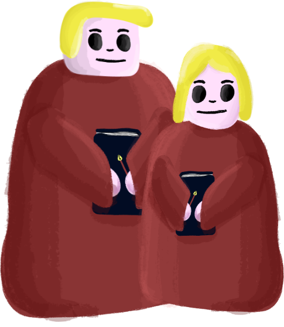

De jobs

- Moet elke dag schrijven
-1 boek per maand
-Focust alleen op schrijven
-Altijd risico om niet-schrijver te worden

- Moet elke dag schrijven
-1 boek per maand
-Focust alleen op schrijven
-Altijd risico om niet-schrijver te worden